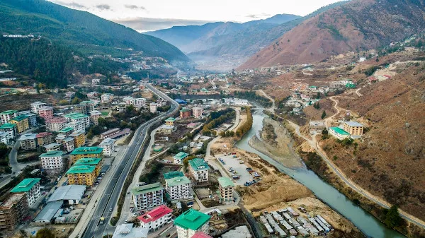

Bem-vindo ao Butão – Um Reino entre as Montanhas do Himalaia
O Butão é um pequeno país localizado entre a China e a Índia, conhecido por suas paisagens montanhosas, cultura budista e estilo de vida simples e feliz. É um dos destinos mais únicos e preservados do mundo.
Ao longo deste site, você poderá conhecer mais sobre os pontos turísticos mais impressionantes do país, a cultura local, práticas sustentáveis e por que o Butão é considerado um exemplo mundial de turismo responsável.
Seja bem-vindo a essa viagem virtual por um país onde a natureza, a espiritualidade e a felicidade caminham juntas.
